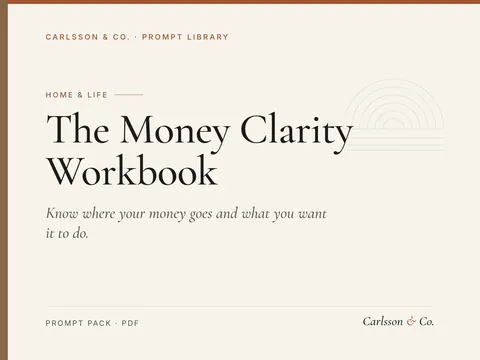
Know where your money goes and what you want it to do.
15 prompts to understand your spending, build a budget you'll keep, plan savings goals and prepare for money conversations.
Sample prompt
Here are my last month's expenses (no account details): [paste]. Categorise them, total each category, and show…
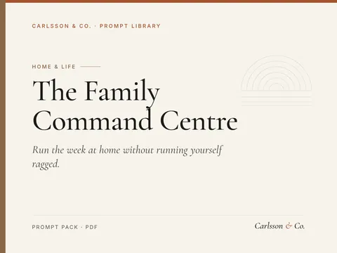
Run the week at home without running yourself ragged.
16 prompts for busy parents: weekly family planning, chore charts, school-morning routines, screen-time agreements, birthday parties and calm conversations about hard topics.
Sample prompt
Act as a family organiser. Our household: [adults and children's ages]. This week's fixed commitments: [list].…
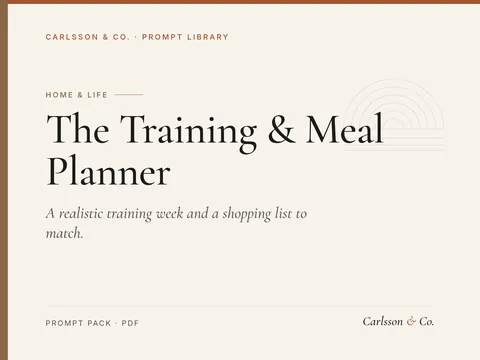
A realistic training week and a shopping list to match.
15 prompts for planning your own workouts and everyday meals: weekly training schedules, home workouts, meal plans, batch cooking, shopping lists and habit tracking.
Sample prompt
I can train [days] days a week for [minutes] minutes, with [equipment]. My goal is [general…
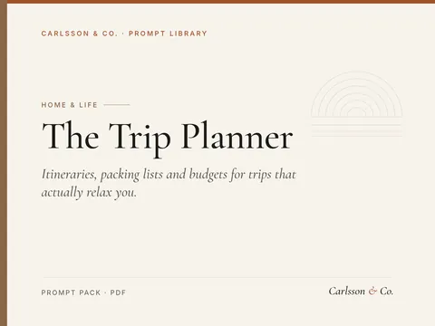
Itineraries, packing lists and budgets for trips that actually relax you.
15 prompts for planning holidays and weekends away: destination shortlists, day-by-day itineraries, budgets, packing lists, food finds, travelling with kids and rainy-day backups.
Sample prompt
Suggest 6 destinations for a [days]-day trip in [month] from [home city] for [travellers] who like [interests],…
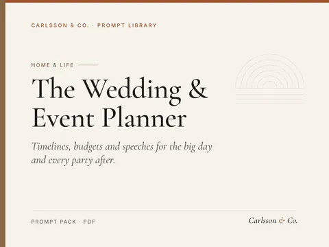
Timelines, budgets and speeches for the big day and every party after.
15 prompts for planning weddings, milestone birthdays, anniversaries and other events: budgets, timelines, guest lists, vendor emails, run-of-show, speeches, signage and thank-yous.
Sample prompt
Create a planning timeline for a [event] on [date] with [guests] guests, working backwards month by month, with a…
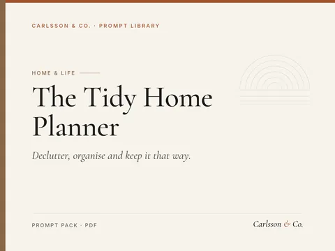
Declutter, organise and keep it that way.
15 prompts for home organisation: room-by-room decluttering plans, cleaning schedules, storage ideas, moving checklists, paperwork systems and family routines that keep the house in order.
Sample prompt
Create a 30-day declutter plan for a [home size] with [household], 15–20 minutes a day, room by…
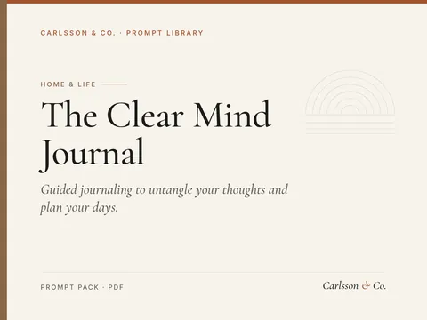
Guided journaling to untangle your thoughts and plan your days.
15 prompts for reflective journaling: morning pages, evening reviews, untangling worries, decisions, gratitude, values, weekly and monthly reviews.
Sample prompt
Ask me 4 short morning questions about how I feel, what matters today, what might get in the way and one thing…
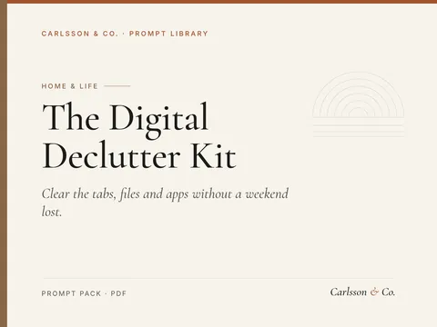
Clear the tabs, files and apps without a weekend lost.
14 prompts for a calmer digital life: inbox and desktop resets, file systems, tab and app audits, password hygiene, notification rules and a weekly maintenance habit.
Sample prompt
My desktop and Downloads folder are full of [types of files]. Design a 45-minute reset: what to delete, where to…
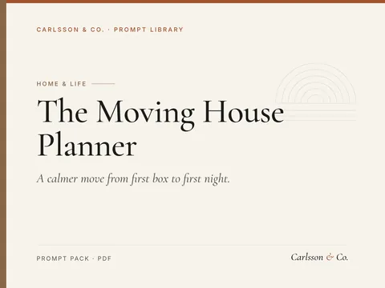
A calmer move from first box to first night.
13 prompts for planning a house move: timelines, budgets, room packing orders, change-of-address lists, utility setup, first-night kits and settling-in routines.
Sample prompt
We move on [date] from [old place] to [new place] with [household]. Build a week-by-week timeline from 8 weeks out…
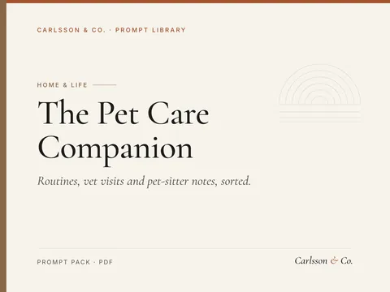
Routines, vet visits and pet-sitter notes, sorted.
14 prompts for everyday pet organisation: daily and weekly care routines, feeding logs, vet visit prep, travel and boarding notes, pet-sitter briefs and lost-pet plans.
Sample prompt
Create a simple daily care card for my [species/breed], age [age], covering feeding, walks or play, meds reminders…
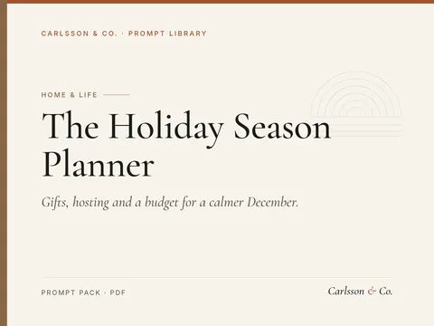
Gifts, hosting and a budget for a calmer December.
14 prompts for a calmer holiday season: a realistic calendar, a gift list and budget, hosting menus and timelines, travel and family logistics, cards and thank-you notes, and a gentle January reset.
Sample prompt
Help me plan the holiday season from [start date] to [end date] for a household of [who]. Fixed events are [list].…
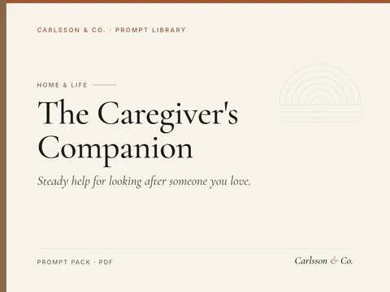
Steady help for looking after someone you love.
12 prompts for family caregivers: organising appointments and medications, preparing for doctor visits, sharing updates with relatives, splitting tasks fairly, handling paperwork questions and protecting your own rest.
Sample prompt
I am caring for my [relationship] who [general situation]. Help me build a one-page care overview: daily routine,…
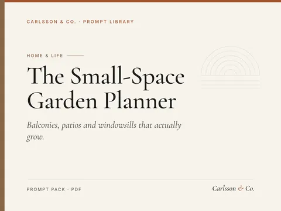
Balconies, patios and windowsills that actually grow.
12 prompts for gardening in small spaces: reading your light and space, choosing plants and containers, a seasonal planting calendar, watering and feeding routines, growing herbs and vegetables, and fixing common problems.
Sample prompt
My growing space is a [balcony/patio/windowsill/small yard] of about [size], facing [direction], in [climate or…
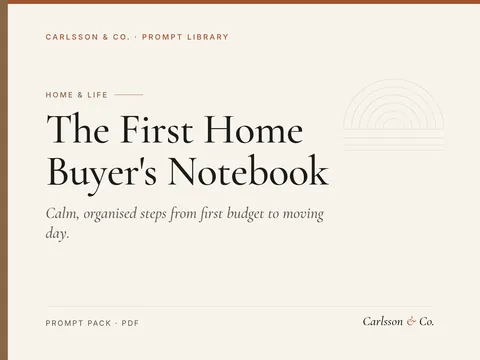
Calm, organised steps from first budget to moving day.
14 prompts for first-time buyers of a flat or house: realistic budgets and deposits, questions for a lender or mortgage adviser, must-have lists, comparing areas, viewing checklists, side-by-side property comparisons, offers and follow-ups, survey findings, documents and deadlines, and a moving-in plan.
Sample prompt
My household take-home income is [monthly amount] and our regular outgoings are [list of costs]. Help me lay out a…
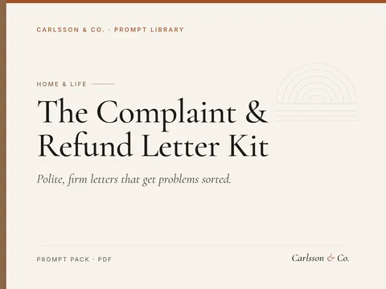
Polite, firm letters that get problems sorted.
12 prompts for everyday consumer complaints and claims: first complaints, refunds, repairs and replacements, faulty products and warranties, cancelling subscriptions and contracts, disputing bills and charges, travel delays and compensation, late or missing deliveries, poor service, follow-ups, escalation and keeping a record of your case.
Sample prompt
I bought [product or service] from [company] on [date] and the problem is [what went wrong]. Write a short, polite…
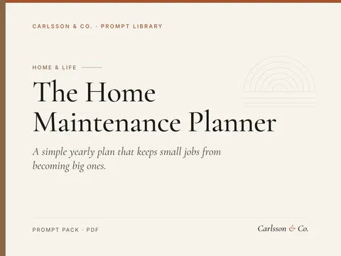
A simple yearly plan that keeps small jobs from becoming big ones.
12 prompts for looking after a home without stress: a home inventory, a seasonal maintenance calendar, a monthly 20-minute checklist, winter and summer preparation, diagnosing problems safely, deciding between DIY and hiring, job briefs and quote comparisons, a yearly maintenance budget, landlord repair requests and a home logbook.
Sample prompt
Help me build a home inventory for my [type of home, rough age and whether I own or rent]. Create a table of…
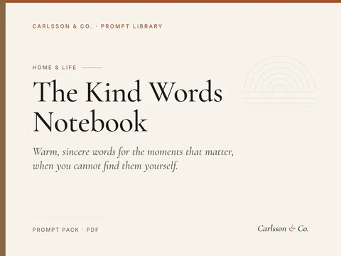
Warm, sincere words for the moments that matter, when you cannot find them yourself.
12 prompts for writing personal messages and cards: thank-you notes for gifts and help, condolence and sympathy messages, words for someone who is ill or struggling, congratulations on babies, weddings, new jobs and graduations, birthday and milestone messages, sincere apologies, short toasts, farewell notes to colleagues, reconnecting with old friends and letters of gratitude.
Sample prompt
[Name] gave me [gift] for [occasion]. Our relationship is [how we know each other] and I plan to [how I will use…
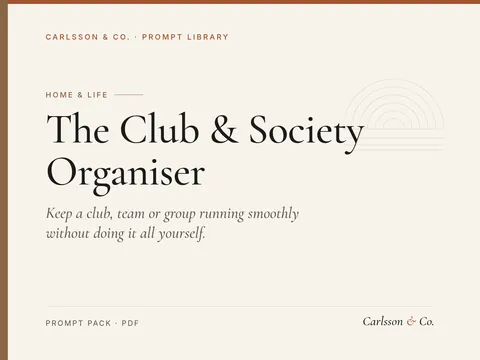
Keep a club, team or group running smoothly without doing it all yourself.
12 prompts for running a volunteer-led club, society, team or hobby group: welcoming new members, season and term schedules, volunteer roles and asking for help, meeting and AGM agendas, minutes and action lists, members' updates, fee and subscription reminders, a simple budget and expenses record, calm handling of disagreements, social events, house rules and a handover note.
Sample prompt
Write a friendly welcome message for a new member joining [club name], a [type of group] that meets [when and…
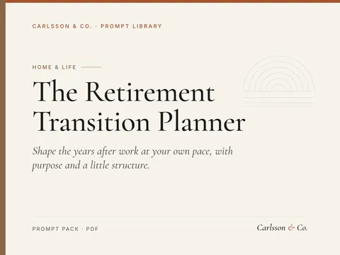
Shape the years after work at your own pace, with purpose and a little structure.
13 prompts for moving from work into retirement or semi-retirement: reflecting on what work gave you, imagining an ordinary good week, a simple shape for the days, staying connected, purpose through volunteering, learning or part-time work, health routines, organising money questions and paperwork, talking with a partner, handing over at work, a first-year plan and handling flat days.
Sample prompt
I am leaving my role as [job or field] after [number] years. Ask me eight gentle questions, one at a time, about…
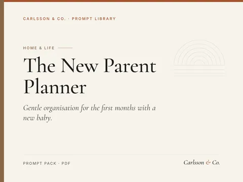
Gentle organisation for the first months with a new baby.
12 prompts for expecting and new parents: a calm pre-birth checklist, packing a birth bag, a freezer and meal plan, sharing night feeds and chores, a flexible daily rhythm, questions for appointments, asking for help, a visitor plan with kind boundaries, announcing the birth, thank-you notes, tracking paperwork and leave dates, and small ways to look after yourselves.
Sample prompt
Our baby is due on [due date] and we live in [type of home and space]. Make a calm checklist of what to get ready…
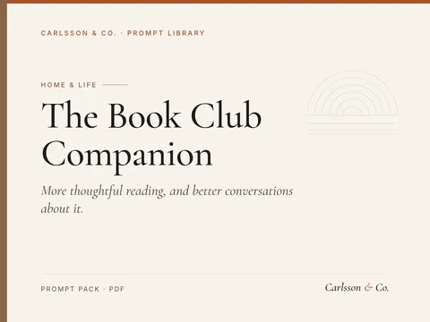
More thoughtful reading, and better conversations about it.
11 prompts for reading more deliberately and running or joining a book club: a reading list built from your tastes and moods, a realistic monthly reading plan, choosing books for a group, spoiler-free discussion questions, a ninety-minute meeting structure, drawing in quieter members, invitations and reminders, a reading journal, chapter notes, comparing books with their adaptations and a yearly reading review.
Sample prompt
Here are five books I loved, [titles], and two I could not finish, [titles]. Suggest ten books I might enjoy,…
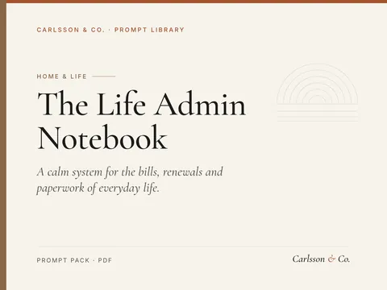
A calm system for the bills, renewals and paperwork of everyday life.
15 prompts for getting on top of personal and household life admin: a brain dump and triage, a gentle way back in, an admin hour routine, a renewals and deadlines calendar, a subscriptions review, warranties and receipts, tax and benefit paperwork planning, letters to cancel, query or switch, preparing for calls, a filing system, an important documents and contacts list, and sharing admin fairly at home.
Sample prompt
Here is everything on my mind that needs sorting: [list of admin tasks, letters, bills and worries]. Sort it into…
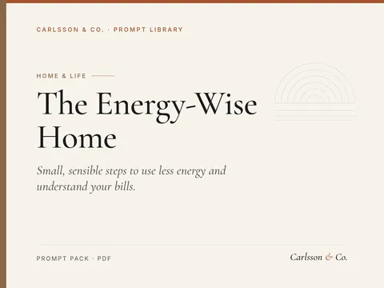
Small, sensible steps to use less energy and understand your bills.
15 prompts for using less energy at home: reading an energy bill, tracking meter readings, a room-by-room walk-through, heating and cooling habits, hot water and laundry, kitchen and appliances, standby and electronics, draughts and low-cost fixes, a household agreement, a seasonal checklist, comparing tariffs and questions for landlords, installers and advisers.
Sample prompt
Here is the text from my latest energy bill: [paste bill text, with account numbers removed]. Explain each section…
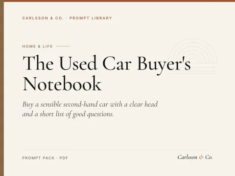
Buy a sensible second-hand car with a clear head and a short list of good questions.
14 prompts for buying a used car from a dealer or a private seller: working out what you need, a realistic total budget, comparing running costs, reading adverts, questions before viewing, checking paperwork and service history, a viewing and test-drive checklist, inspection questions, dealer and private sale protections, polite negotiation, walking away, handover and payment, and the first month of ownership.
Sample prompt
Help me work out what I need from a car. I drive about [weekly mileage], mostly [town, motorway or rural roads],…
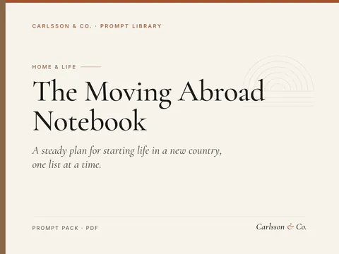
A steady plan for starting life in a new country, one list at a time.
15 prompts for planning and settling into a move abroad: a readiness check, city and neighbourhood research, a move timeline, a visa paperwork checklist, a document folder, a moving budget, what to ship, sell or store, renting from a distance, arrival tasks, healthcare and schools, everyday phrases, friendships and routine, and staying close to home.
Sample prompt
I am thinking about moving from [current country] to [destination country] for [reason: work, study, a partner or…